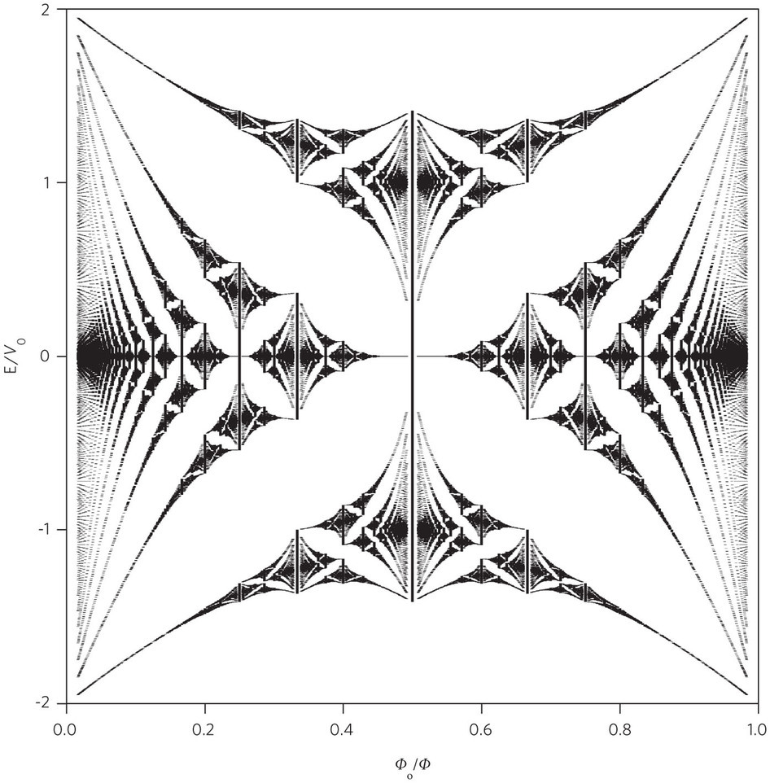
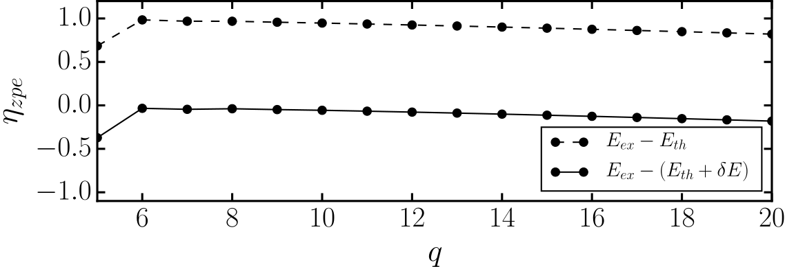
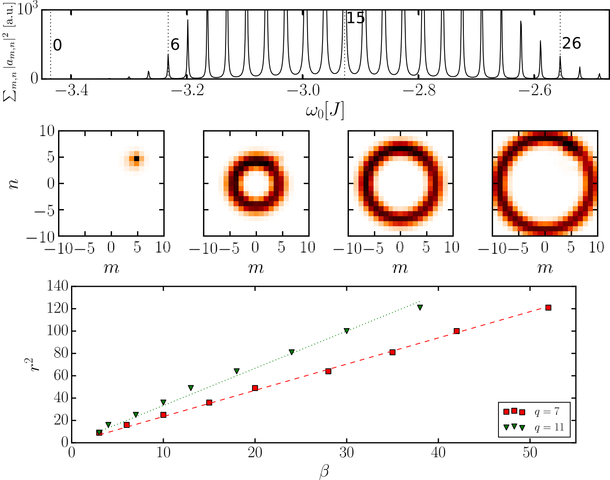
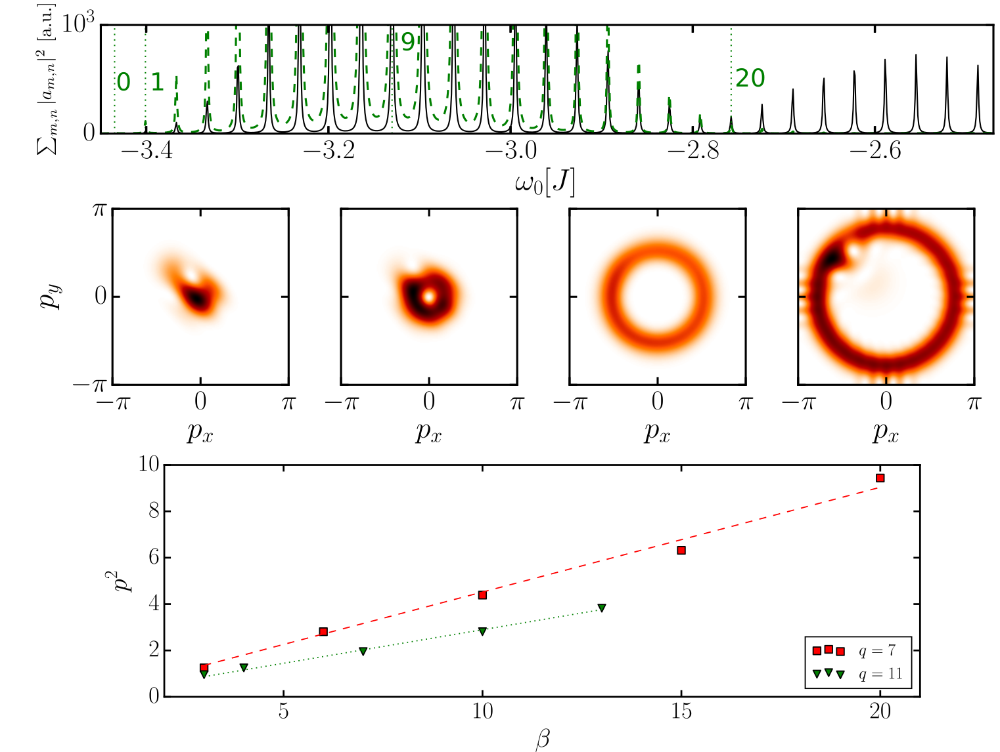
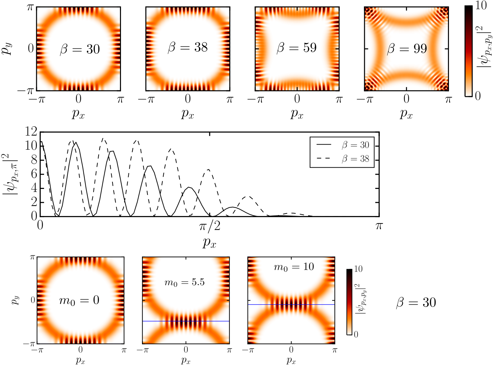
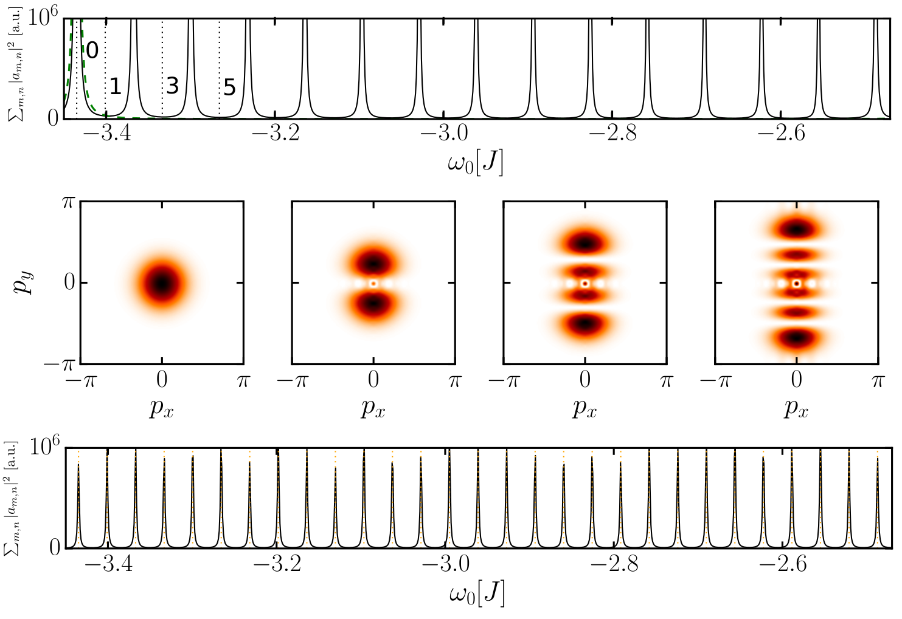
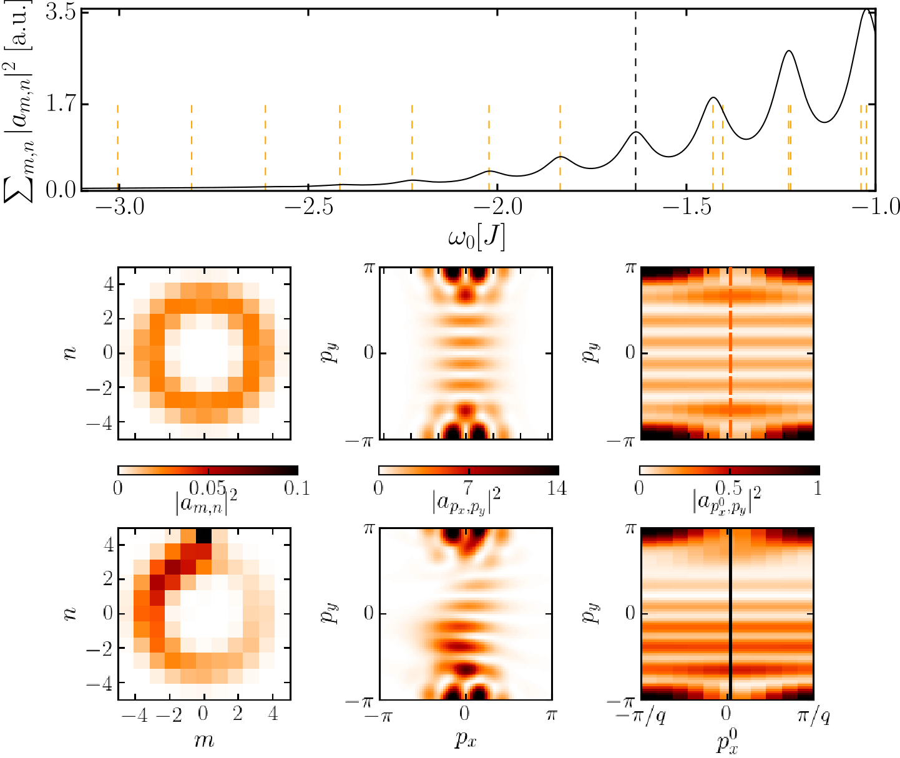
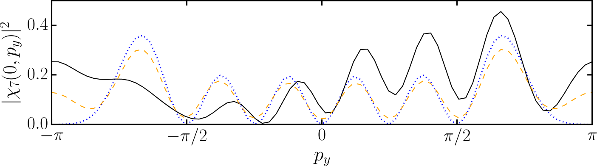

Driven-dissipative toroidal Landau levels in cavity arrays
Introduction to the Julia language
Motivation
- ultracold gases: PRL 111, 185301 (2013), PRL 111, 185302 (2013)
- classical circuits: arXiv:1309.0878 (2013)
- classical pendula (two copies of HH model): arXiv:1503.06808
- solid-state superlattices: Nature 497, 598 (2013), Nat Phys 10, 525 (2014)
- silicon photonics: Nature Photonics 7, 1001 (2013)
Momentum space magnetism
- model Hamiltonian
\(H=\mathcal{H}_0+\frac{1}{2}\kappa \sum_{m,n}\left[(m-m_0)^{2}+(n-n_0)^{2}\right]\hat{a}_{m,n}^{\dagger}\hat{a}_{m,n}\)
- dual in momentum space
\(\widetilde{H} = E_n(\mathbf{p}) + \frac{\kappa}{2} [i\nabla_{\mathbf{p}} + \mathcal{A}_n(\mathbf{p})]^2\)
Harper-Hofstadter model
\(\mathcal{H}_0=-J\sum_{m,n}(e^{i \phi_{m,n}^x}\hat{a}_{m+1,n}^{\dagger}\hat{a}_{m,n}+e^{i \phi_{m,n}^y}\hat{a}_{m,n+1}^{\dagger}\hat{a}_{m,n}) + \text{h.c.}\)
Harper-Hofstadter model

Harper-Hofstadter model

\(BW = \max_{\mathbf{p}}(E_1(\mathbf{p})) - \min_{\mathbf{p}}(E_1(\mathbf{p}))\)
\(\Delta E = \langle E_2(\mathbf{p})\rangle_{\mathbf{p}} - \langle E_1(\mathbf{p})\rangle_{\mathbf{p}}\)
Non Abelian correction
\(\epsilon_{n,\beta} = E_n + \left(\beta + \frac{1}{2}\right) \kappa |\Omega_n| + \delta E\)
\(\delta E(\mathbf{p}) = \frac{\kappa}{2} \sum_{n^{\prime} \neq n} |\mathcal{A}_{n,n^{\prime}}(\mathbf{p})|^2\)

\(\eta_{\text{zpe}} = \frac{4\pi\alpha}{\kappa} (E_{\text{ex}} - \epsilon_{1,0})\)
Driving and dissipation
\(i\partial_{t}a_{i,j}(t)+i\gamma a_{i,j}(t)-f_{i,j}e^{-i\omega_{0}t}=\left[a_{i,j}(t),H\right]\)
Selection rules: \(\delta\)–pump

Selection rules: Gaussian pump

Intermezzo: Hitting the edge

Homogeneous & random pumping

Experimental proposal

Experimental proposal
\(\chi_\beta (\mathbf{p}) = \mathcal{N} \sum_j e^{- i p_y j a} e^{ - ( p_x + j a l_{\Omega_n}^2 )^2 / 2 l_{\Omega_n}^2} H_\beta ( p_x / l_{\Omega_n} + j a l_{\Omega_n})\)

Julia
First contact
- 2 language problem
- vectorize everything, or else!
function mandel(z) c = z maxiter = 80 for n = 1:maxiter if abs(z) > 2 return n-1 end z = z^2 + c end return maxiter end
- C-level performance
Multiple dispatch
- traditional OO paradigm – dispatch based on one argument only
obj.foo(arg1, arg2, ..)
- Julia – multiple dispatch
foo(obj, arg1, arg2, ..)
julia> methods(+) # 139 methods for generic function "+": +(x::Bool) at bool.jl:33 +(x::Bool,y::Bool) at bool.jl:36 +(y::FloatingPoint,x::Bool) at bool.jl:46 +(x::Int64,y::Int64) at int.jl:14 +(x::Int8,y::Int8) at int.jl:14 +(x::UInt8,y::UInt8) at int.jl:14 +(x::Int16,y::Int16) at int.jl:14 +(x::UInt16,y::UInt16) at int.jl:14 +(x::Int32,y::Int32) at int.jl:14 +(x::UInt32,y::UInt32) at int.jl:14 +(x::UInt64,y::UInt64) at int.jl:14 +(x::Int128,y::Int128) at int.jl:14
User-defined types
- type declaration not mandatory
- parametric types
type Wavefunction{T} c::Array{T, 2} x::Array{T, 2} end +{T}(psi1::Wavefunction{T}, psi2::Wavefunction{T}) = Wavefunction{T}(psi1.c + psi2.c, psi1.x + psi2.x) +{T}(psi::Wavefunction{T}, c::Float64) = Wavefunction{T}(psi.c .+ c, psi.x .+ c) *{T}(c::Number, psi::Wavefunction{T}) = Wavefunction{T}(c*psi.c, c*psi.x) /{T}(psi1::Wavefunction{T}, psi2::Wavefunction{T}) = Wavefunction{T}(psi1.c ./ psi2.c, psi1.x ./ psi2.x) import Base.abs abs(psi::Wavefunction{Complex{Float64}}) = Wavefunction{Float64}(abs(psi.c), abs(psi.x)) import Base.maximum function maximum(psi::Wavefunction{Float64}) maxc = maximum(psi.c) maxx = maximum(psi.x) return max(maxc, maxx) end
Julia is..
- free, open-source software (MIT license)
- high level (Python, MATLAB)
- homoiconic